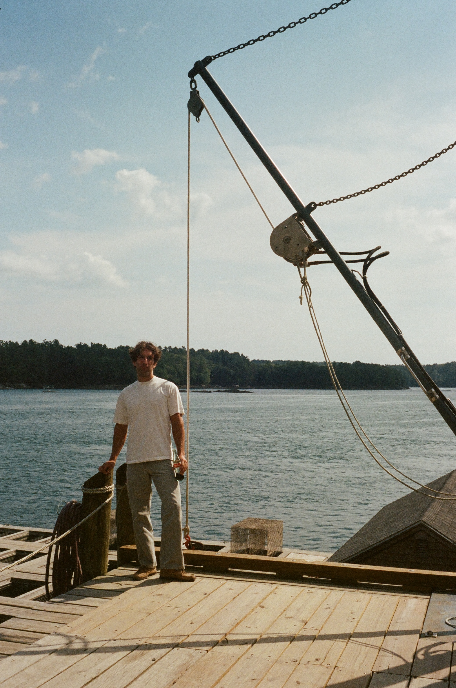

Scout, posing with Balance Rock in Bar Harbor.Me, attempting to topple said rock. Scout, wandering Helen and Scott Nearing's enclosed garden at The Good Life Center......and their greenhouse.View of the garden from the Nearing's second-floor balcony. View of Boothbay Harbor.A seagull. Scout, taking in the view of Penobscot Bay from Bakeman Beach.She made me pose for this.

Seeing how the sausage is made at Glidden Point Oysters.I made her pose for this.